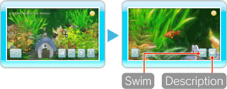
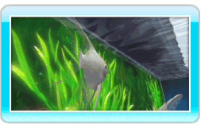
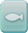
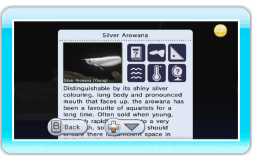

12 |
Fish Focus |
 |
|
Point at a fish in the aquarium and press


Select  to follow the fish and see the inside of the tank from its point of view. The following controls will be available when following a fish.
Note: Fish swim in a preset path and cannot be guided by the player.
Select |

 while looking around to continue swimming.
while looking around to continue swimming. |
 |
 |